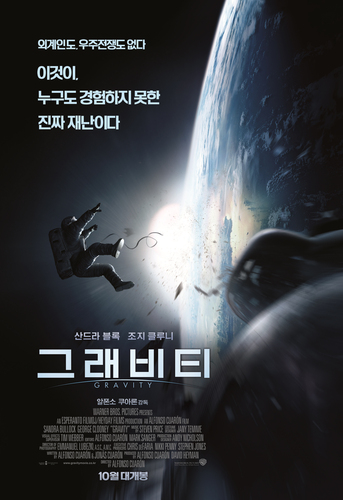

검색
홈페이지 소개
홈페이지 작성자 사진 및 소개
관심분야
그래비티

2013 | SF | 미국
알폰소 쿠아론 감독
허블 우주망원경을 수리하기 위해 우주를 탐사하던 라이언 스톤 박사는 폭파된 인공위성의 잔해와 부딪히면서 소리도 산소도 없는 우주 한 가운데에 홀로 남겨지는데…
영화관에서 SF 영화란 정보만 가지고 처음 접했던 영화입니다.
압도적인 현실성과 몰입감은 영화를 보는 내내 마치 내가 실제로 우주에서 활공하고 있다는 느낌을 받았습니다.
관람이 아닌 체험이라는 표현에 어울리는 영화입니다.